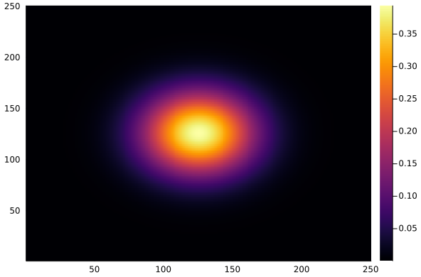

We held our first Hackathon on April 4-8 in Schwarzwald, focussing on a wide range of Julia topics.
ROCm (AMDGPU) MPI
Ludovic Räss
Majority of the most powerful and next generation of supercomputers host either Nvidia or AMD graphical processing units (GPUs), commonly known as accelerators. Being able to efficiently utilise thousands of these GPUs in parallel is therefore crucial to sustain petascale and exascale computing workflows in scientific simulations.
Important is also to be able to leverage both Nvidia and AMD devices without having to change a single line of code, making a decisive design step in a concept commonly referred to as (backend) portability. Backend portability (and thus associated performance portability) is one of the key points we aim to achieve within the PASC funded GPU4GEO project, using the Julia language.
We are excited to announce that ImplicitGlobalGrid.jl now supports ROCm (-aware) MPI, including AMDGPU.jl as backend 🚀, besides CUDA.jl (Nvidia GPUs) and (multi-threaded) CPU support.
To succeed, following changes where required (to be merged soon and released)
- ImplicitGlobalGrid.jl: AMDGPU (
ROCArray) support, automatic backend detection - AMDGPU.jl: adding memory pool API for correct device (and associated device memory) selection, adding
unsafe_wrapfunctionality, adding async memcpy functionality - MPI.jl: adding
ROCArraysupport for ROCm-aware MPI
This repository contains the sandbox project using ROCm (-aware) MPI to compute 2D diffusion on 4 MAD MI50 GPUs at CSCS's test system. The non-ROCm-aware runs were also successfully performed by Thibault Duretz on the Goethe HLR AMD cluster, University of Frankfurt.
Thanks to Julian Samaroo (MIT), Valentin Churavy (MIT), Samuel Omlin (CSCS) and Ivan Utkin (ETHZ) for their valuable help and insights on this topic.